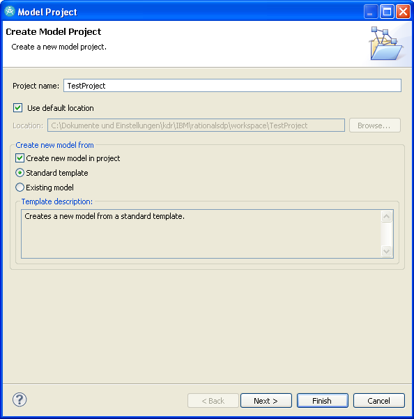
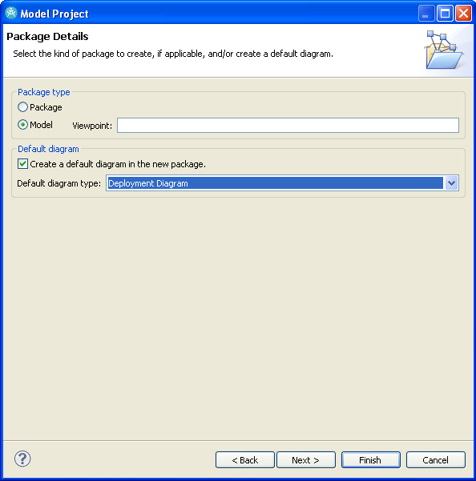
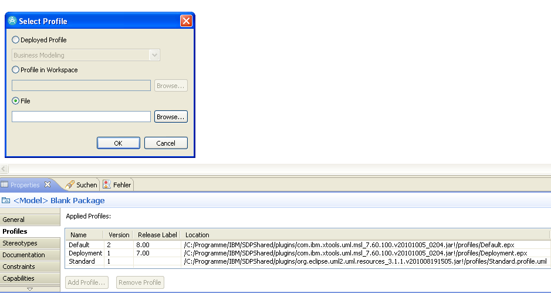

Creating UMLsec models with IBM Rational
Content:
Importing the UMLsec profile
- Create a new model project: File → New → Model Project
- Enter a name for your project.

- Click Next twice.
- Ensure that the package type is set to Model and choose your Default diagram type.

- Click Finish.
- Select the root element of your model in the project explorer.
- In the properties view click on Profiles and add a new profile.

- In the appearing Select Profile window choose File and browse to your local copy of the
UMLsec.profile.uml file.
- Click on Open and confirm your decision by clicking OK.
- Save your project. You are now ready to start modeling with UMLsec.